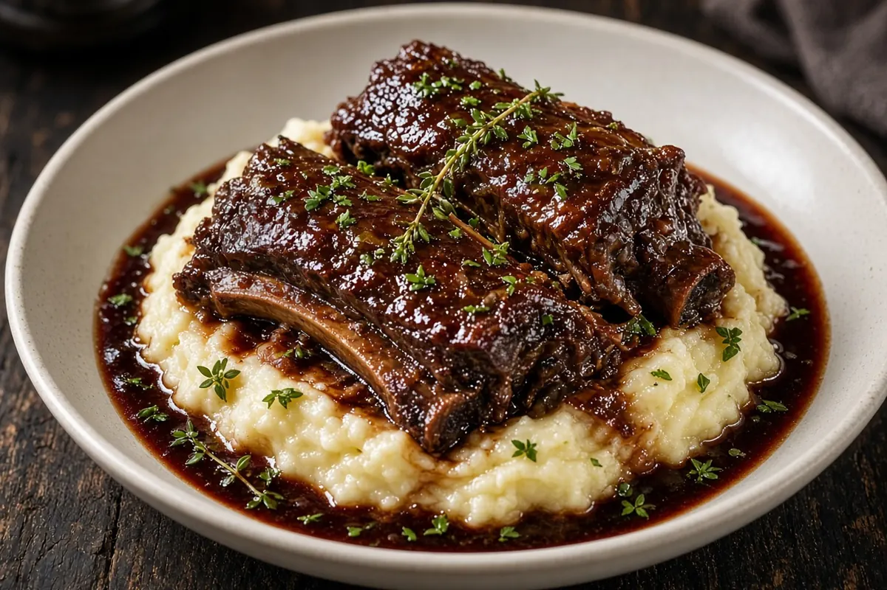
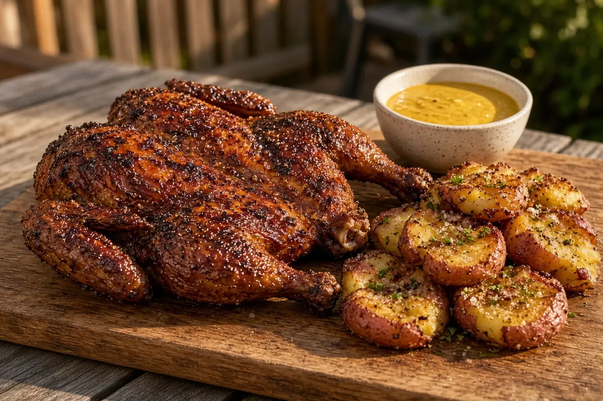
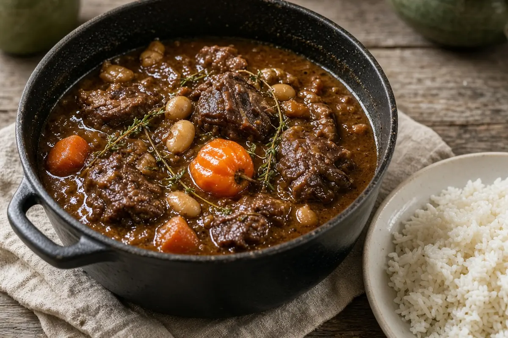
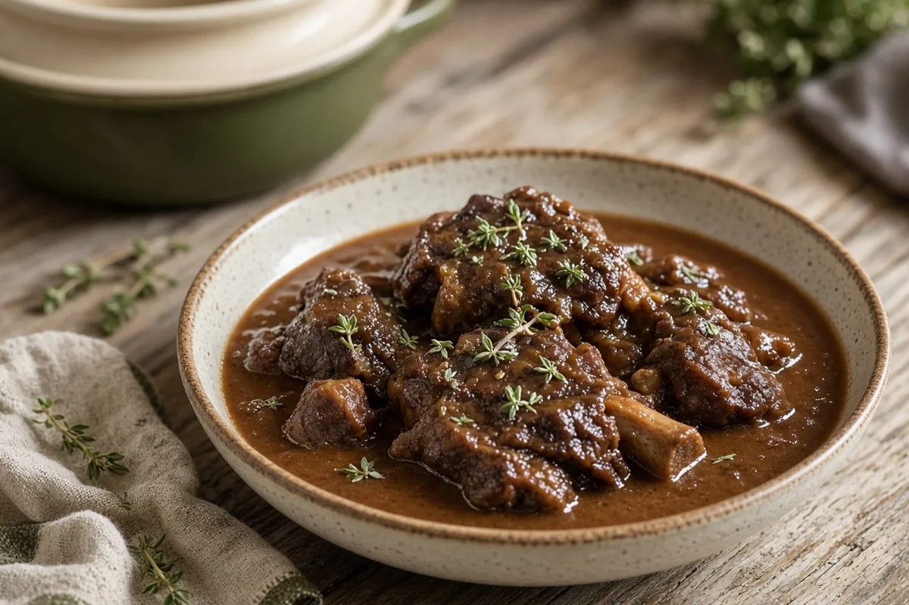
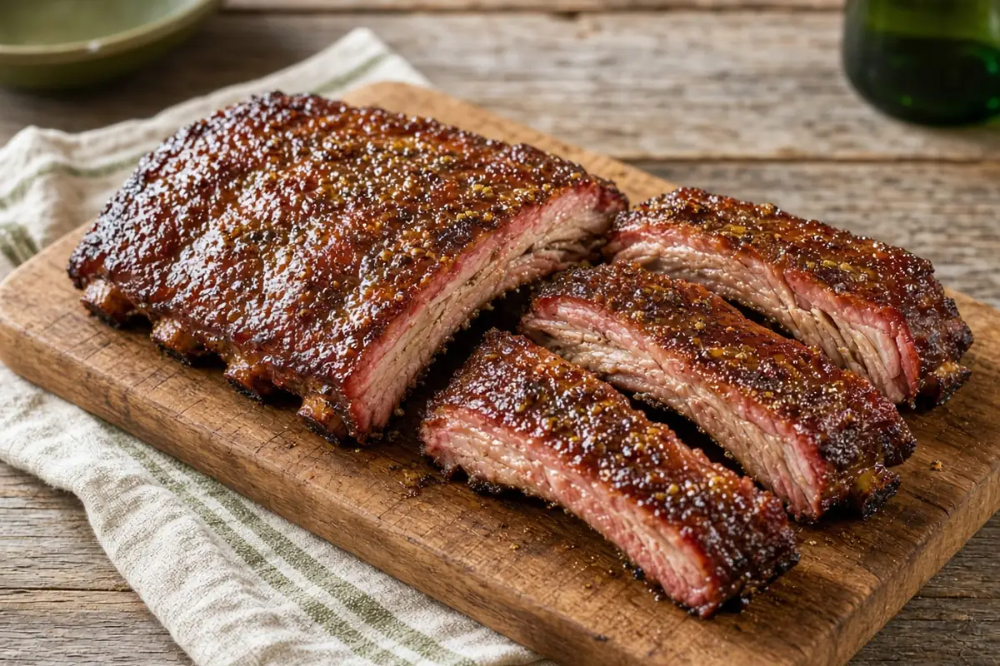
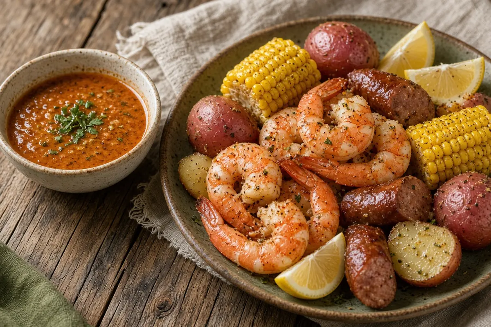
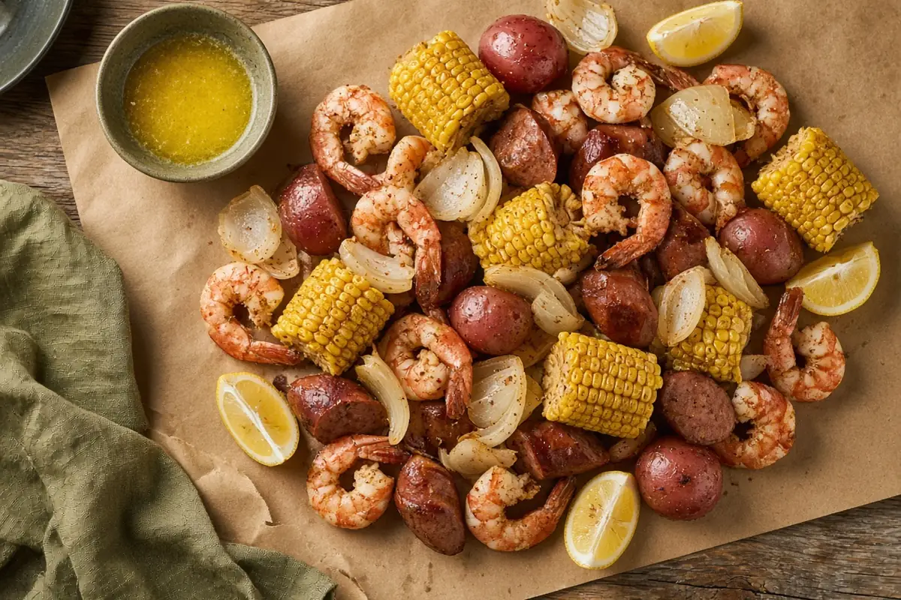

Weekend dinnersRed Wine Braised Short Ribs
Weekend dinnersSmoked Spatchcock Chicken with Carolina Gold Sauce and Smashed Red Potatoes Weekend dinnersPellet-Grill Smoked Meatloaf with Buttered Corn
Weekend dinnersPellet-Grill Smoked Meatloaf with Buttered Corn
Weekend dinnersJamaican Oxtail Stew Weekend dinnersPellet-Grill Reverse-Sear Tri-Tip
Weekend dinnersPellet-Grill Reverse-Sear Tri-Tip
Weekend dinnersKeto Slow Cooker Braised Oxtails Weekend dinnersJo Mama's Big-Batch Italian Sausage Spaghetti
Weekend dinnersJo Mama's Big-Batch Italian Sausage Spaghetti Weekend dinnersOven-Baked BBQ Pork Steaks
Weekend dinnersOven-Baked BBQ Pork Steaks Weekend dinnersPellet-Grilled BBQ Chicken Thighs
Weekend dinnersPellet-Grilled BBQ Chicken Thighs Weekend dinners3-2-1 Baby Back Ribs with Brown Sugar and Honey Wrap
Weekend dinners3-2-1 Baby Back Ribs with Brown Sugar and Honey Wrap
Weekend dinners3-2-1 Smoked Ribs with Apple Spritz
Weekend dinnersEasy Seafood Boil Sauce
Weekend dinnersLow-Country Boil Weekend dinnersPellet-Grill Reverse-Sear Top Sirloin Steaks
Weekend dinnersPellet-Grill Reverse-Sear Top Sirloin Steaks Weekend dinnersSeared Ribeye on the Pellet Grill
Weekend dinnersSeared Ribeye on the Pellet Grill Weekend dinnersTexas Smoked Brisket
Weekend dinnersTexas Smoked Brisket Weekend dinnersSheet-Pan Salmon with Sweet Potatoes and Green Beans (10-lb Side)
Weekend dinnersSheet-Pan Salmon with Sweet Potatoes and Green Beans (10-lb Side) Weekend dinnersSmoked Chicken Thighs with Alabama White Sauce
Weekend dinnersSmoked Chicken Thighs with Alabama White Sauce Weekend dinnersLowcountry Shrimp and Grits
Weekend dinnersLowcountry Shrimp and Grits Weekend dinnersSunday Chuck Roast with Vegetables
Weekend dinnersSunday Chuck Roast with Vegetables Weekend dinnersSunday Chuck Roast (PossibleCooker Pro)
Weekend dinnersSunday Chuck Roast (PossibleCooker Pro) Weekend dinnersPeach-Bourbon Cast-Iron Pork Chops
Weekend dinnersPeach-Bourbon Cast-Iron Pork Chops- Weekend dinnersPeach-Bourbon Pork Chops on the Pellet Grill
 Weekend dinnersCast-Iron Flank Steak with Herb Chimichurri & Roasted Fingerlings
Weekend dinnersCast-Iron Flank Steak with Herb Chimichurri & Roasted Fingerlings